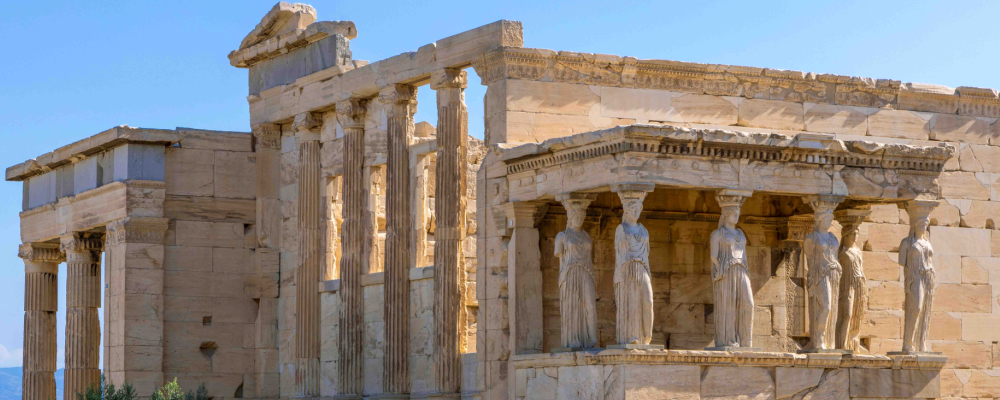
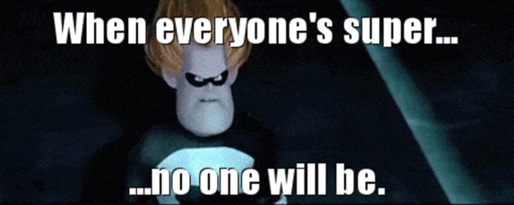

What Is an Athenaeum?
The term “athenaeum” originates from the Greek “Athenaion,” referring to a temple dedicated to Athena, the goddess of wisdom, where poets and scholars gathered to read and discuss their work. Today the word athenaeum means a building or institution dedicated to the promotion of learning. In the context of this website the term is referring to the fact that in exploring it you would have to be either extremely knowledgeable or extremely dense in order to escape learning something new.
Unusual Insights, Brought to Your Fingertips
What do you say we have a go at making all these unusual insights a little more usual? Because if nothing is special, everything is. That being said, at the moment there are still things that aren't special, so let's focus on things that are. There are so many amazing things most people have never heard of that really have no excuse for being obscure. Then there are the ones that do have an excuse, like being almost extinct, barely discovered, or illegal in most countries. Either way, I plan to inform you of them whether they deserve it or not. From obscure creatures with bizarre features, to plants that look like anything but, to unusual traditions being followed in remote corners of the world, there is knowledge and awe to be gained all around us, and we can draw inspiration from these amazing epiphanies, oddities, and natural wonders.
